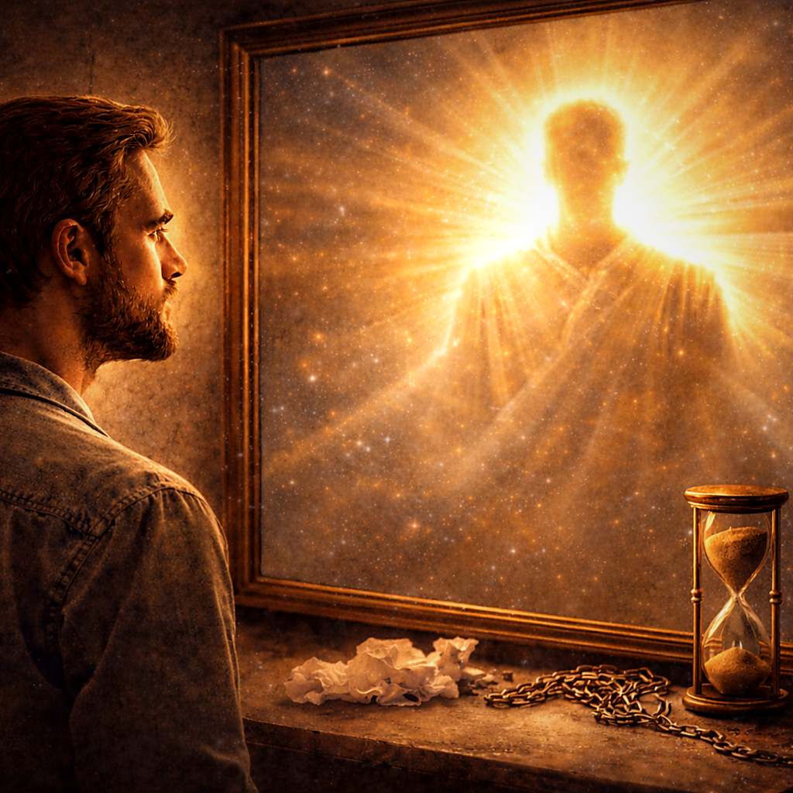
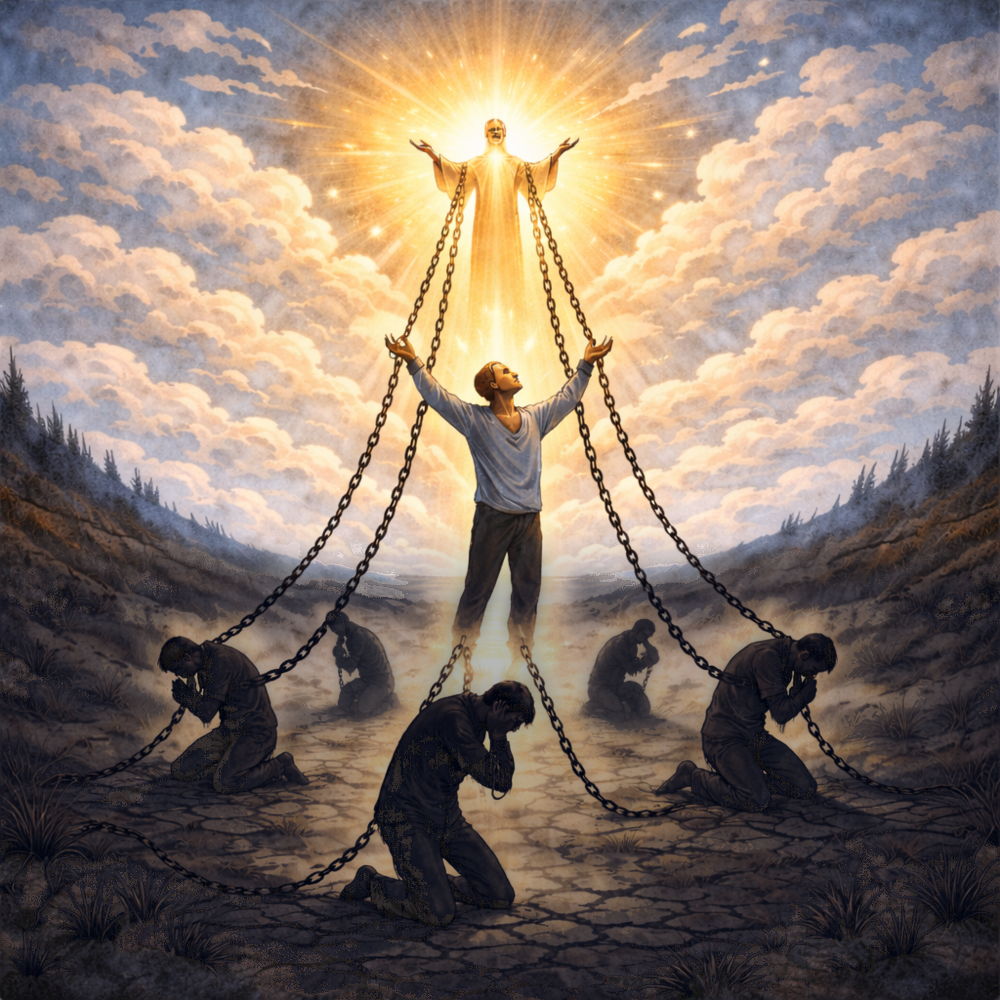
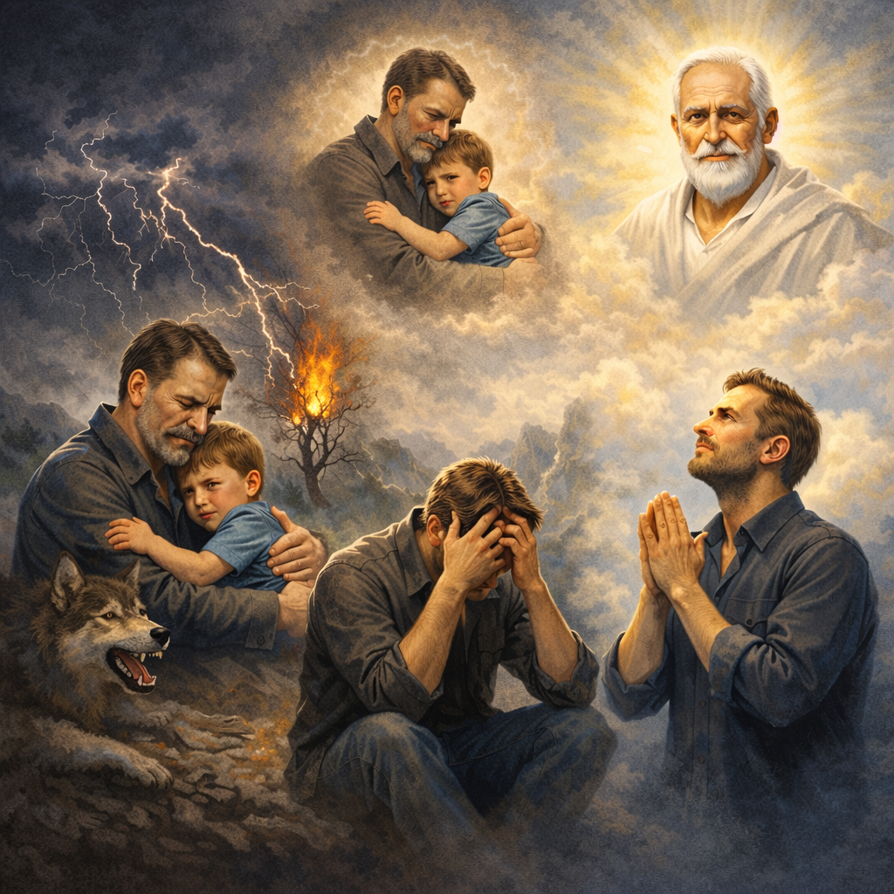
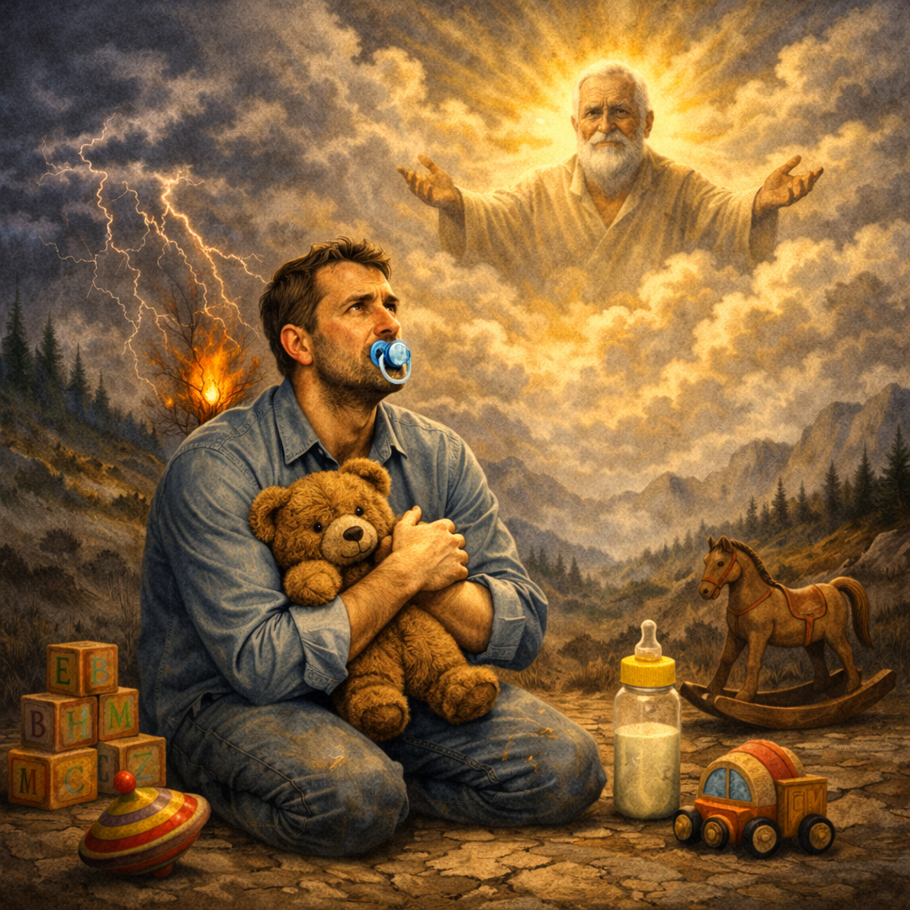
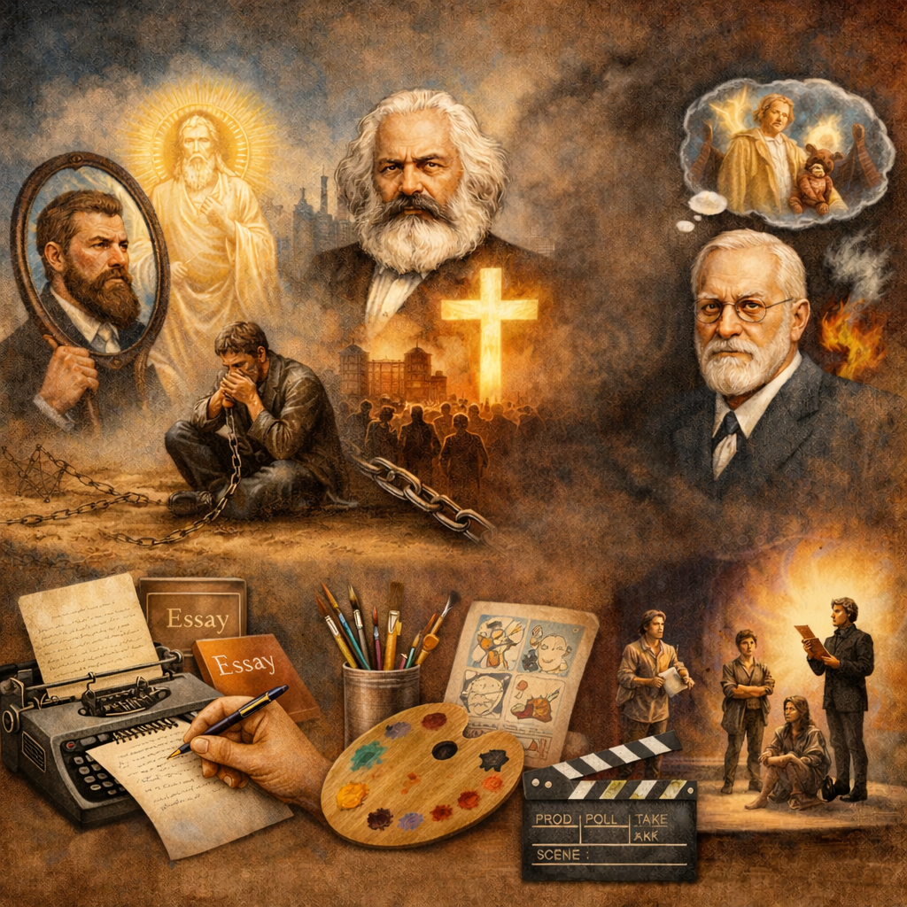

Text zur Dysfunktionalität.
Religionskritik
Materialsammlung
In der Materialsammlung sind die Arbeitsbögen und Präsentationen gebündelt. Fachwissenschaftliche Orientierung, didaktisch-methodischer Kommentar, Stundenverlauf und Erwartungshorizont finden sich in den Dateien zu den jeweiligen Einzelstunden.
Die interaktiven Textfelder in den PowerPoint-Präsentationen funktionieren nur unter Windows.
Ludwig Feuerbach (1804–1872)
Gott – eine Projektion des Menschen?
Anhand zweier pointierter Zitate und eines Textauszugs von Ludwig Feuerbach erschließen die Lernenden seine Projektionstheorie. Sie visualisieren Feuerbachs Argumentation in einem Schaubild, prüfen deren Erklärungskraft und diskutieren anschließend begründet zwei Thesen: "Religion ist eine Projektion des Menschen" und "Religion ist die Entzweiung des Menschen mit sich selbst".

Warum der Himmel uns die Erde kostet
Anhand eines fiktiven Interviews erschließen die Lernenden Feuerbachs Religionskritik. Sie rekonstruieren die dysfunktionalen Folgen der Projektion in einer Argumentationskette, ordnen die Schritte mithilfe der vier Religionsfunktionen, prüfen die Reichweite der Kritik und übersetzen anthropologisierend zentrale theologische Gehalte in eine diesseitige "Religion des Menschen".

Sigmund Freud (1856–1939)
Gott – nichts anderes als ein erhöhter Vater?
Anhand eines Zitat-Puzzles und eines Textauszugs von Sigmund Freud erschließen die Lernenden seinen genetischen Ansatz zur Entstehung von Religion. Sie untersuchen funktionale Parallelen zwischen Elterninstanz und Gott, visualisieren Freuds Argumentationsgang in einem Schaubild und prüfen anschließend die Erklärungskraft seiner Theorie im Vergleich zu Feuerbach.

Die Welt ist keine Kinderstube
Anhand eines fiktiven Interviews erschließen die Lernenden Freuds Religionskritik. Sie rekonstruieren die dysfunktionalen Folgen der Projektion und veranschaulichen zentrale Diagnosebegriffe (Illusion, Infantilismus, Autoritätsgehorsam, Unbehagen) an pointiertem Bildmaterial. Abschließend wechseln sie in die theologische Innenperspektive, entwickeln Gegenargumente und prüfen Freuds Argumentation im Gespräch.

Karl Marx (1818–1883)
Religion – Opium des Volks?
Anhand einer Karikatur und eines Textauszugs von Karl Marx erschließen die Lernenden seine Religionskritik im Kontext der Kapitalismuskritik. Sie rekonstruieren Marx' Argumentationsgang in einem fiktiven Interview, visualisieren Kausal- und Rückkopplungszusammenhänge in einem Schaubild und prüfen abschließend die gesellschaftliche Ambivalenz religiöser Deutungen und Praxisformen.
Abschlussstunde
Religionskritik – Kreativ
Anhand bildgestützter Impulse und eines synoptischen Vergleichs von Feuerbach, Marx und Freud bündeln die Lernenden zentrale religionskritische Ansätze. Sie systematisieren Gemeinsamkeiten und Unterschiede und setzen sich in einem kreativen Handlungsprodukt (z. B. Podcast, Karikatur, Gedicht oder Standbild) vertiefend mit ausgewählten Aspekten auseinander.

Klausuren
Das Passwort für die Klausurmaterialien kann von Lehrkräften unter ...@... erfragt werden.
Passwort nicht korrekt.